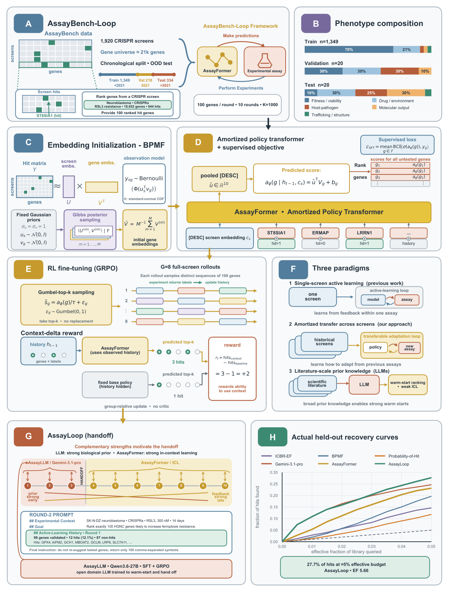

Method
How the loop is built
The work comprises three pieces: a framework that turns historical CRISPR screens into a sequential decision problem, a transformer that learns an acquisition policy across all of them, and a handoff rule that combines the strong priors of an LLM with the stronger adaptive policy. This page covers the pipeline and every metric the paper reports.
The pipeline
The whole method on one page. Panels A–B set up the task, C–E build AssayFormer, and F–H put it all together into AssayLoop.

Panel by panel
The metrics
The most straightforward way to measure the performance of hit-discovery models would be to report the value of the utility function, but this is complicated by two factors. First, all possible genes are not necessarily measured in every screen, yet sampling a non-measured gene should not be penalized. Second, some models, such as large language models, can hallucinate genes outside the gene universe or suggest a shorter gene list than prescribed. The metrics below account for these limitations.
We let G denote the set of all possible genes, L the set of genes in the gene library of a given screen (the genes for which a label is available), H the set of hits in L, and Gt the set of genes acquired by the model over t rounds.
Hit enrichment factor (EF)
Our main metric is the hit enrichment factor (EF), that measures the ratio between the number of hits found and the expected number of hits found by random selection.
We write NL = |GT ∩ L| for the number of acquired genes over the full trajectory present in the screen library, NG = |GT ∩ G| for the number of valid acquired genes, N̄G = |GT ∖ G| for the number of acquired genes that do not represent valid genes (for example, hallucinated genes or failure to use all b acquisition slots), and hrand = |H|/|L| for the random hit rate. We define the hit enrichment factor as
EF = |GT ∩ H| ⁄ [ (NL + N̄G) · hrand ]
This formula differs from the classical enrichment factor in the number of acquired genes used for the normalization. By normalizing with (NL + N̄G), we do not penalize acquisition of real genes that are not part of the screen library, but do penalize the acquisition of hallucinated genes.
Normalized area under the cumulative-hits curve (nAUC)
We also report the normalized area under the cumulative-hits curve (nAUC), which captures the full acquisition trajectory rather than only the endpoint. We construct the curve by plotting the fraction of hits found against the fraction of the library effectively queried, with one point per acquisition batch. For each batch t = 1, …, T, we denote NL,t and N̄G,t the cumulative numbers of in-library and invalid acquired genes in Gt, respectively, and NH,t = |Gt ∩ H| the number of hits in Gt. The cumulative-hits curve is composed of points with coordinates
(xt, yt) = ( (NL,t + N̄G,t) / |L|, NH,t / |H| ).
The area under this piecewise-linear curve is computed by trapezoidal integration and normalized by the AUC of a perfect oracle that ranks all hits before any non-hit over the same effective budget. The perfect-oracle curve has coordinates (xt, min(xt |L| / |H|, 1)).
nAUC = AUC / AUCoracle
A value of 1.0 indicates the model acquires all hits in the screen first. Random acquisition yields nAUC ≈ |H|/|L| (the hit rate) in expectation when |GT| < |H|.
Fraction of hits (FH)
We report the fraction of hits found over the whole trajectory, measuring the recall of the acquisition policy. Using the same notation, this is defined as
FH = |GT ∩ H| / |H|.
This is the number of hits acquired by the model divided by the total number of hits in the screen. Only in-library genes can be hits, so out-of-library and hallucinated acquisitions do not contribute to the numerator. A value of 1.0 means all hits in the screen were found within the acquisition budget.
Shortfall (SF)
We report the shortfall as the fraction of acquired genes that fall outside the screen's gene library. Using the same notation,
SF = |GT ∖ L| / |GT|.
This is the number of acquired genes not present in the screen library divided by the total number of acquisitions. It includes both real genes outside the library (GT ∩ (G ∖ L)) and hallucinated genes (GT ∖ G).
Percentage of essential genes (%ess)
Some genes are hits in a given screen just because these genes typically lead to cell death in general, also known as essential genes. While these genes are genuine hits, they do not always reflect the particularities of the biology studied in the screen. To reflect the number of found hits that are specific to the biology of interest, we also report the percentage of essential genes among the hits found. We use the list of 1,827 common essential genes from the Cancer Dependency Map (DepMap). Let E denote the set of common essential genes. The percentage of essential genes is
%ess = |GT ∩ H ∩ E| / |GT ∩ H|.
This is the number of acquired hits that are common essentials divided by the total number of acquired hits.
Vendi score (VS)
We report two complementary diversity metrics for the acquired batches, measuring whether the model selects functionally diverse genes or concentrates on a narrow biological neighborhood at each step. For each batch, we compute gene embeddings using GenePT, construct the cosine-similarity Gram matrix K of all acquired genes Gt, and compute its Vendi score, which corresponds to the effective number of distinct genes in Gt (1 means all embeddings of genes in Gt are collinear and |Gt| means all embeddings are orthogonal). We report the Vendi ratio, which is normalized by |Gt| and averaged across batches. A higher Vendi ratio means the genes acquired in the batch are more diverse.
Pathway overlap (PO)
Pathway overlap is the pairwise Jaccard similarity of the acquired genes' pathways, normalized by random. Values greater than 1 indicate more redundant pathway coverage than random.
Effective pathways (EP-B / EP-S / EP-D)
We measure how much distinct biology a method interrogates using the effective number of Reactome pathway groups in a set of acquired genes, computed by the Hill number of order 1 of the induced pathway distribution. Using the second hierarchy tier of Reactome (186 groups), each gene is assigned to one of its groups uniformly at random, leading to an empirical distribution over pathway groups.
EP = exp(H(p)).
We compute EP over distinct scopes: EP-B over a single acquisition batch (b = 100 genes), EP-S over all picks within a screen (b × T = 1,000 genes), and EP-D over all picks pooled across the test set. Each scope is subsampled to a fixed annotated-gene count (30, 200, and 6,000, respectively), so the three metrics are not directly comparable across scopes. Higher EP values indicate that the method is exploring a broader range of biological pathways (the maximum attainable value is the total number of groups, 186), while lower values suggest a focus on a narrower set of pathways.
Interpretation
- EF compares endpoint hit yield with random selection while accounting for invalid proposals and unfilled acquisition slots. EF = 1 is random performance.
- nAUC rewards methods that recover hits early in the trajectory, while FH reports endpoint recall and SF reports proposals outside the measured screen library. See the recovery curves →
- %ess, VS, PO, and EP describe which biology a method selects: common-essential hits, embedding diversity, within-batch pathway redundancy, and pathway breadth at batch, screen, and dataset scope. See the diversity explorer →
- Compare every reported metric in the results table →